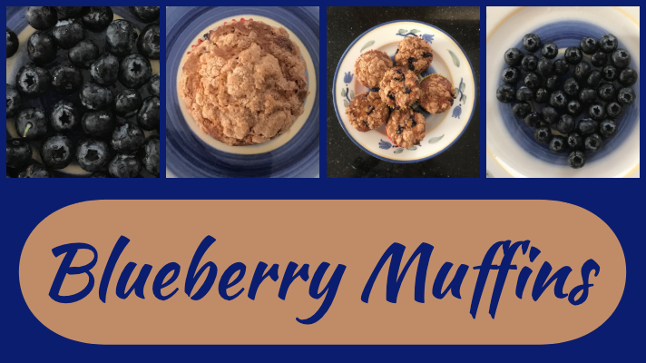

Cooking Time : 24 Minutes
Equipment: 12 muffin tin
INGREDIENTS:
Dry Ingredients
- 1½ cups all purpose flour
- 2 tps baking powder
- ½ tps salt
Wet Ingredients
- ¾ cup brown sugar
- ¼ cup butter
- 1 egg
- ½ cup milk
- 1 tsp vanilla extract
Fruits
- 1.5 cups fresh blueberries
Crumble Ingredients
- ¼ cup white sugar
- 1/6 cup all purpose flour
- 1 tsp ground cinnamon
- 2 tbsp butter at room temp
PREPARATION:
- Preheat oven to 400ºF (Make sure rack is in the oven center).
- Line 12 muffin tin with paper
- Mix the flour, baking powder, and salt in a bowl.
- Place the butter, sugar, and egg into a mixer bowl, and using the pedal attachment cream together.
- Add the vanilla to the milk.
- Add to the mixing bowl the dry ingredients, alternating with the milk . Don’t over mix!
- Fold in Blueberries.
- pour the batter into the pan.
- In the same mixing ball, combine with a fork brown sugar, flour, Cinnamon and butter.
- Sprinkle the crumble over the cake.
- Bake at 400 for 24 minutes.